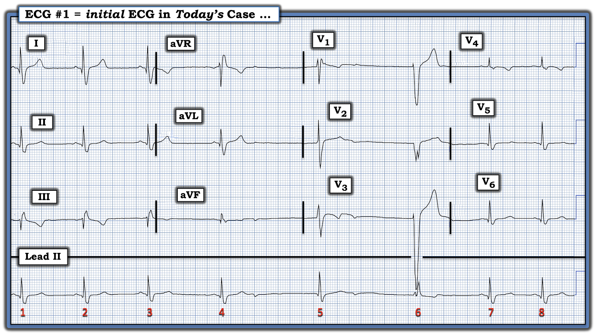
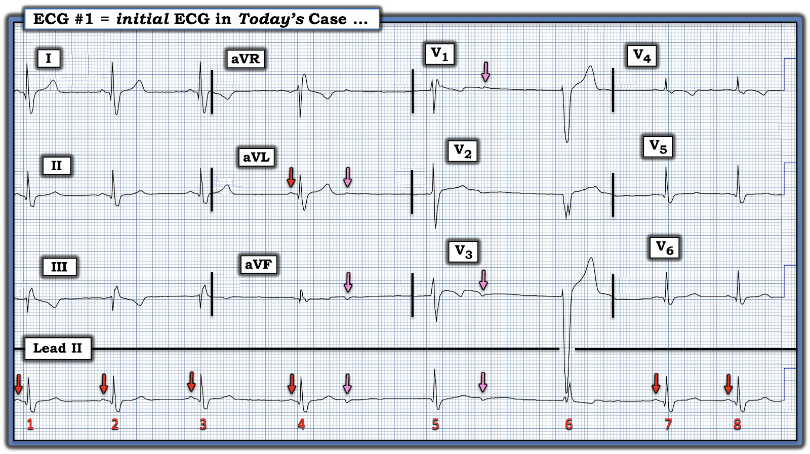
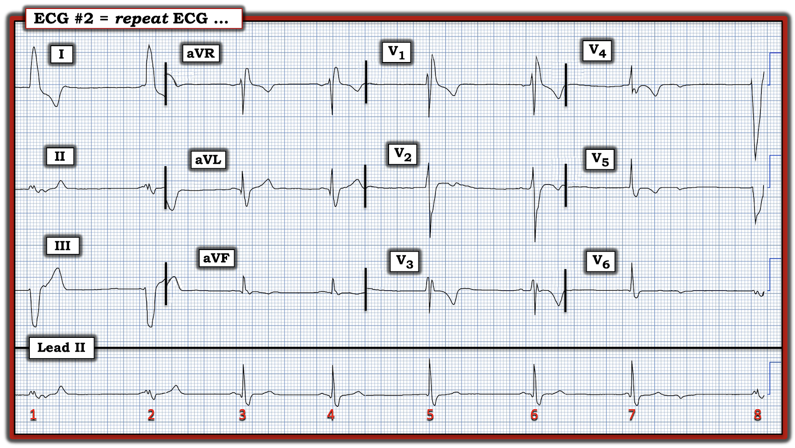
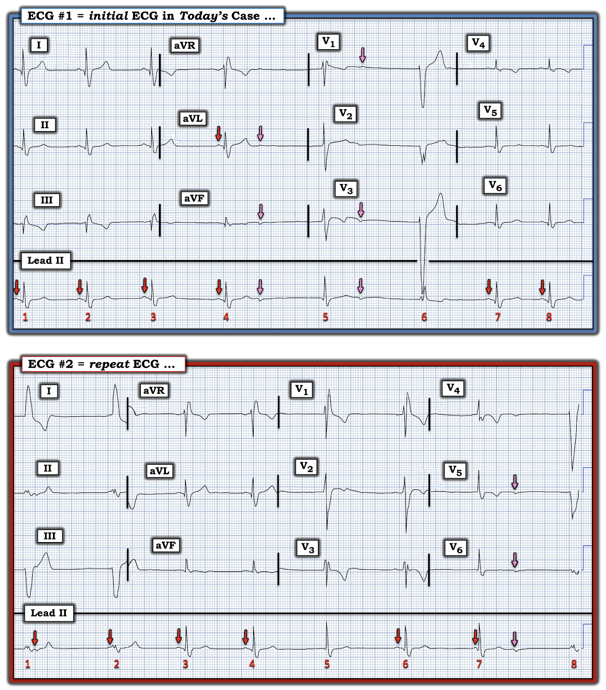
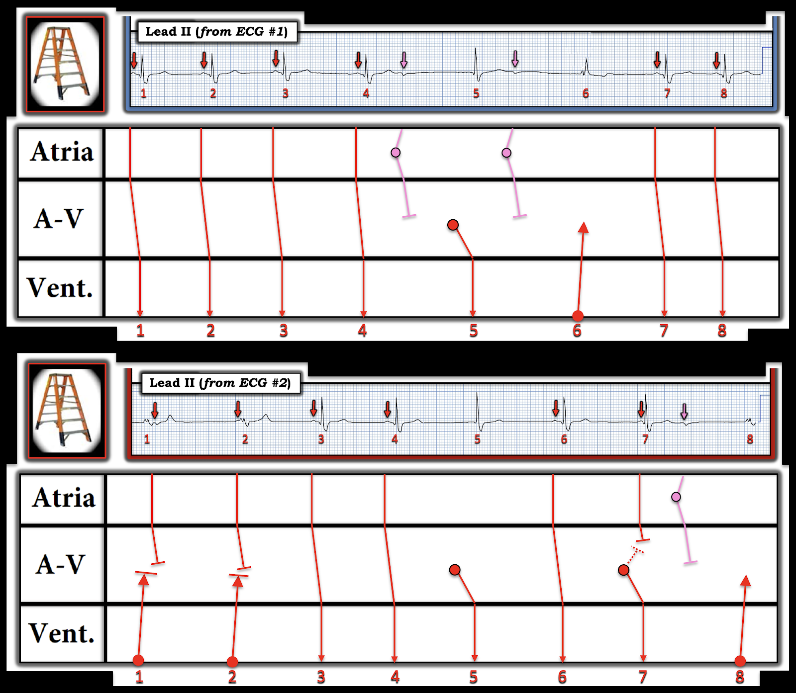

ECG Blog #450 — Một người 30 tuổi "khỏe mạnh" bị chóng mặt
Điện tâm đồ trong Hình-1 được ghi ở một người đàn ông 30 tuổi trước đó khỏe mạnh — điện tâm đồ này được ghi trong một đợt khám sức khỏe tiền tuyển dụng "thường quy". Anh ấy đã có vài đợt "chóng mặt", nhưng không ngất. Ngoài ra anh ấy khỏe mạnh, không có bệnh lý nội khoa nào.
CÂU HỎI:
- BẠN sẽ đọc điện tâm đồ trong Hình-1 như thế nào?
- Cần đánh giá bệnh nhân này ra sao?


SUY NGHĨ CỦA TÔI về điện tâm đồ trong Hình-1:
Đây là một bản ghi khó đọc — vì có nhịp chậm rõ rệt với nhịp không đều và thay đổi hình dạng QRS.
- Chỉ có 8 nhát được ghi trên dải nhịp ~10 giây này — tương ứng tần số trung bình ~50/phút.
- Phức bộ QRS rộng (tức là thời gian >0.10 giây).
- Có một số sóng P xoang — cũng như những gì có vẻ là một vài sóng P xuất phát từ một vị trí nhĩ khác.
Đến đây — tôi nghĩ điều hữu ích nhất là xác định hoạt động nhĩ — tôi đã làm việc này bằng các mũi tên màu trong Hình-2.
- Các sóng P xoang dương được thấy trước các nhát #1,2,3,4; và #7,8 trên dải nhịp chuyển đạo II dài (mũi tên ĐỎ) — dải nhịp này được ghi đồng thời với bản ghi 12 chuyển đạo phía trên. Khoảng PR trước mỗi nhát trong 6 nhát này hằng định ở ~0.12 giây — vì vậy đây là các nhát dẫn truyền từ xoang (0.12 giây là giới hạn dưới của bình thường cho dẫn truyền qua nhĩ).
- Phức bộ qRS giãn rộng theo sau mỗi nhát dẫn truyền từ xoang này ở các chuyển đạo bên trái I và V5,V6 — gợi ý các nhát này được dẫn truyền với RBBB (blốc nhánh phải — Right Bundle Branch Block).
- Các sóng lệch âm biên độ nhỏ xuất hiện sau sóng T của các nhát #4 và 5. Chúng có vẻ là các sóng P không dẫn truyền — vì không có phức bộ QRS nào theo sau (mũi tên HỒNG trong Hình-2). Vì hình dạng của các sóng lệch âm này khác với hình dạng của sóng P xoang mũi tên ĐỎ — tôi nghĩ các sóng P mũi tên HỒNG này xuất phát từ một vị trí khác trong nhĩ.
- Không có sóng P trước nhát #5. Vì hình dạng QRS của nhát #5 này trên chuyển đạo II dài trông giống hình dạng QRS của các nhát xoang #1,2,3,4; và 7,8 — nhát #5 hẳn phải là một nhát thoát bộ nối.
- Lưu ý hình dạng rSr’ của nhát #5 ở chuyển đạo V1 ghi đồng thời — ủng hộ nghi ngờ của tôi rằng các nhát xoang #1,2,3,4; 7,8 được dẫn truyền với RBBB.
- Còn lại nhát #6 — nhát này cũng rộng, không có sóng P nào đi trước trên dải nhịp chuyển đạo II dài — và khác về hình dạng QRS so với 7 nhát còn lại trên dải nhịp chuyển đạo II dài vốn biểu hiện dẫn truyền RBBB. Điều này gợi ý nhát #6 là một nhát thoát thất.
NHẬN ĐỊNH: Điện tâm đồ ban đầu của ca hôm nay là một bản ghi phức tạp, biểu hiện nhịp chậm xoang và loạn nhịp xoang rõ rệt — RBBB nền — cùng cả nhát thoát bộ nối lẫn nhát thoát thất khi tần số tim giảm xuống dưới 50/phút.
- Dường như còn có một số sóng P không dẫn truyền xuất phát từ một vị trí nhĩ khác (các mũi tên HỒNG trong Hình-2).
- Về thay đổi ST-T trên điện tâm đồ 12 chuyển đạo — mặc dù một số chuyển đạo có sóng T đảo ngược (tức là ở các chuyển đạo III, V3 và V4) — tôi không nghĩ hình ảnh này là cấp tính ở người đàn ông 30 tuổi không đau ngực này.


============================
Còn điện tâm đồ ghi lại thì sao?
Một lúc sau — điện tâm đồ của bệnh nhân được ghi lại (Hình-3).
- BẠN sẽ đọc điện tâm đồ #2 (trong Hình-3) như thế nào?


SUY NGHĨ CỦA TÔI về điện tâm đồ trong Hình-3:
Điện tâm đồ ghi lại cũng khó đọc như bản ghi ban đầu. May mắn là dải nhịp chuyển đạo dài ghi đồng thời ở cuối điện tâm đồ #2 — một lần nữa cho phép chúng ta xác định nguyên nhân của các nhát có hình dạng QRS khác biệt.
- Cũng hữu ích khi biết rằng ở điện tâm đồ #1 được ghi sớm hơn một chút ở cùng bệnh nhân (ở Hình-1 phía trên) — nhịp nền là nhịp chậm xoang và loạn nhịp xoang, với QRS giãn rộng do RBBB — trong đó thấy cả nhát thoát bộ nối lẫn nhát thoát thất khi tần số tim giảm xuống dưới 50/phút.
Đặt cả hai điện tâm đồ của ca hôm nay cạnh nhau:
Để dễ so sánh — tôi đã đặt cả hai điện tâm đồ của ca hôm nay cạnh nhau trong Hình-4. Một lần nữa, với điện tâm đồ #2 — đánh dấu sóng P giúp rất nhiều trong việc nhận ra các đặc điểm điện tâm đồ:
- Sóng P xoang trên điện tâm đồ ghi lại chậm và không đều (mũi tên ĐỎ trên dải nhịp chuyển đạo II dài ở bản ghi phía dưới trong Hình-4).
- Các nhát #3 và #4 trên điện tâm đồ #2 — là các nhát dẫn truyền từ xoang với RBBB (với sóng P dương cùng hình dạng, cùng khoảng PR hằng định, và cùng hình dạng QRS như đã thấy ở các nhát #1,2,3,4; 7,8 trên dải nhịp chuyển đạo II dài của điện tâm đồ #1).
- Nhát #6 trên điện tâm đồ #2 cũng dẫn truyền từ xoang — nhưng khoảng PR trước nhát #7 quá ngắn để dẫn truyền. Điều này cho biết nhát #7 trên điện tâm đồ #2 hẳn phải là một nhát thoát bộ nối.
- Tương tự — nhát #5 trên điện tâm đồ #2 rộng, có hình dạng RBBB, và không có sóng P nào đi trước — điều đó xác định nhát #5 là thêm một nhát thoát bộ nối.
- Lưu ý có một sóng lệch âm biên độ nhỏ sau sóng T của nhát #7 (mũi tên HỒNG ở các chuyển đạo V5,V6 ghi đồng thời và chuyển đạo II dài của điện tâm đồ #2). Giống như ở điện tâm đồ #1 — vì sóng lệch âm mũi tên HỒNG này không có phức bộ QRS theo sau, nó là một sóng P không xoang không dẫn truyền.
- Còn lại các nhát #1, 2 và 8. Lưu ý trên dải nhịp chuyển đạo II dài ở điện tâm đồ #2 — không nhát nào trong số này có sóng P xoang với khoảng PR bình thường đi trước (một sóng P xoang xuất hiện ngay sau QRS của nhát #1 — ngay trước QRS của nhát #2, với khoảng PR quá ngắn để dẫn truyền — và hoàn toàn không thấy sóng P xoang nào ở gần nhát #8).
- Xem các chuyển đạo I và III ghi đồng thời ở các nhát #1 và 2 (và các chuyển đạo V4,5,6 ghi đồng thời ở nhát #8) — xác nhận rằng các phức bộ QRS không được dẫn truyền này rộng và rất khác về hình dạng so với các nhát khác trong bản ghi vốn biểu hiện dẫn truyền RBBB. Điều này cho biết các nhát #1,2 và 8 hẳn phải là các nhát thoát thất.
NHẬN ĐỊNH: Cả hai điện tâm đồ của ca hôm nay biểu hiện các đặc điểm tương tự: nhịp chậm xoang và loạn nhịp xoang rõ rệt — RBBB nền — nhát thoát bộ nối và nhát thoát thất khi tần số tim chậm lại — và một số sóng P không xoang, không dẫn truyền (các sóng P mũi tên HỒNG thấy ở cả hai điện tâm đồ).


============================
Minh họa bằng giản đồ bậc thang:
Để minh họa rõ hơn cơ chế của 2 điện tâm đồ trong ca hôm nay — tôi đã vẽ giản đồ bậc thang (laddergram) trong Hình-5 cho từng dải nhịp chuyển đạo II dài.


============================
Các điện tâm đồ này "khớp" với bối cảnh lâm sàng như thế nào?
Trước khi đi xa hơn — tôi xin dẫn câu sau của Dr. Harry Mond: "Sẽ không thể hiểu được các điện tâm đồ hôm nay nếu chúng ta không hiểu những biểu hiện khác thường của cường phế vị (vagal hypertonia)".
- Trong ECG Blog #61 của tôi — tôi đã bàn về vấn đề blốc do cường phế vị (vagotonic block).
- Với bạn đọc quan tâm muốn tìm hiểu thêm — tôi rất khuyến khích xem bài đăng ngày 1 tháng 10 năm 2021 trên CardioScan của Dr. Mond — trong đó Dr. Mond trình bày "Phổ điện tâm đồ của cường phế vị" (the ECG Spectrum of Vagal Hypertonia), với một loạt ví dụ hấp dẫn về cường phế vị ở những người ngoài ra hoàn toàn khỏe mạnh.
- CẢNH BÁO: Mặc dù nhiều nhịp trong số này gặp ở những người có vẻ khỏe mạnh — chúng không phải lúc nào cũng là rối loạn nhịp lành tính.
Về Ca bệnh HÔM NAY:
Bệnh nhân trong ca hôm nay là một người đàn ông 30 tuổi trước đó khỏe mạnh — 2 điện tâm đồ trên được ghi trong một đợt khám sức khỏe tiền tuyển dụng "thường quy".
- Khi được hỏi — bệnh nhân thừa nhận có vài đợt "chóng mặt", nhưng không ngất. Vì vậy, cả bệnh nhân lẫn nhân viên y tế đều ngạc nhiên trước những gì các điện tâm đồ này cho thấy.
Suy nghĩ của tôi khi xem ca này:
- Bệnh nhân có phải là vận động viên sức bền không? (do đó có thể dễ bị nhịp chậm và hiệu ứng tập luyện làm tăng trương lực phế vị).
- Bệnh nhân có mắc một dạng bệnh tim nền nào không?
- Có tiền sử gia đình đột tử hoặc rối loạn nhịp đáng kể không?
Đề xuất đánh giá:
- Siêu âm tim và MRI tim (Tìm bệnh tim nền và đánh giá chức năng thất trái).
- ETT (nghiệm pháp gắng sức trên thảm lăn — Exercise Treadmill Test) — để xem điều gì xảy ra với tần số tim của bệnh nhân và anh ấy đáp ứng thế nào với các mức gắng sức tăng dần.
- Theo dõi tim trong ~48 giờ — để định lượng và định tính mức độ nặng và thời gian của nhịp chậm và mối tương quan của nó với triệu chứng (cũng như để xem có khoảng ngưng kéo dài nào không).
- XÉT NGHIỆM — gồm điện giải, chức năng thận, xét nghiệm tuyến giáp, v.v.
DIỄN TIẾN CỦA CA BỆNH:
- Tiền sử bổ sung: Bệnh nhân từng chơi bóng đá — nhưng không tham gia các hoạt động sức bền một cách đều đặn trong 8 năm qua.
- Tiền sử gia đình không có đột tử hay rối loạn nhịp.
- Không có gợi ý ngưng thở khi ngủ.
- Siêu âm tim — hoàn toàn bình thường.
- ETT — mức gắng sức và đáp ứng tần số tim với gắng sức rất tốt. Không có bằng chứng thiếu máu cục bộ.
XỬ TRÍ CA BỆNH:
Ý kiến của các bác sĩ tim mạch được hội chẩn về ca này không thống nhất. Nhiều người ủng hộ cấy máy tạo nhịp vào thời điểm này. Nhưng câu hỏi vẫn còn đó — Liệu tất cả điều này có thể đơn giản chỉ là hậu quả của "cường phế vị" (Vagal Hypertonia)?
- Cuối cùng (với sự đồng ý của bệnh nhân sau khi được giải thích đầy đủ) — quyết định được đưa ra là cấy máy tạo nhịp. Các thông số tạo nhịp được chọn để khuyến khích nhịp tự thân của bệnh nhân.
Điểm lại y văn của tôi:
Không có câu trả lời hoàn hảo cho các câu hỏi trên.
- Mặc dù bệnh nhân không tập luyện sức bền đều đặn trong nhiều năm — các rối loạn nhịp của anh ấy có thể chỉ đơn giản là hậu quả của "cường phế vị".
- Chẩn đoán tăng trương lực phế vị phải là một "chẩn đoán loại trừ" (tức là sau khi đã loại trừ bệnh tim nền và/hoặc một nguyên nhân có thể "sửa được").
- Điều khiến tôi lo ngại nhất trên các điện tâm đồ của bệnh nhân là sự hiện diện của các sóng P không dẫn truyền (lẽ ra phải được dẫn truyền). Dù vậy — blốc do cường phế vị có thể gây ra điều này! (theo ECG Blog #61 và bài tổng quan về cường phế vị của Dr. Mond).
- Dù vậy — tăng trương lực phế vị không nhất thiết lành tính, vì nó có thể là một trong những cơ chế của PAVB (blốc nhĩ thất kịch phát — Paroxysmal AtrioVentricular Block) — tình trạng có khả năng gây tử vong (Xem PHẦN BỔ SUNG trong ECG Blog #419 của tôi để biết bàn luận chi tiết về PAVB).
- Các cơ chế liên quan đến cường phế vị và ngất do phản xạ phế vị (vasovagal) rất phức tạp — gồm sự tương tác phức tạp giữa đáp ứng của hệ thần kinh phó giao cảm và đáp ứng bù trừ của hệ thần kinh giao cảm. Các đáp ứng này còn phức tạp hơn nữa ở người trẻ tuổi, đặc biệt khi kèm hoạt động sức bền (Gopinathannair và cs. — Arrhythm & Electrophys Rev 7(2):95-102, 2018).
- ĐIỀU CỐT LÕI: Một số bệnh nhân có rối loạn nhịp chậm đáng lo ngại do tăng trương lực phế vị từng lúc hoặc dai dẳng, đến một lúc nào đó thực sự cần tạo nhịp vĩnh viễn. Đáng tiếc là không có thuốc tốt để điều trị cường phế vị. Có nghiên cứu về việc thử cắt thần kinh phế vị chi phối tim (cardio-vagal denervation) — nhưng vấn đề này vẫn còn tranh cãi và không phải là giải pháp hoàn hảo (Cai và cs. — Front Physiol 14:1088881, 2023). Và — bệnh nhân này có triệu chứng (tức là "chóng mặt" nhiều lần).
==========================================
Lời cảm ơn: Xin cảm ơn ضياء كمال (từ Zagazig, Ai Cập) đã cung cấp ca bệnh và bản ghi này.
==========================================

==============================
Các bài ECG Blog Liên quan đến ca hôm nay:
- ECG Blog #185 — Hệ thống Ps, Qs, 3R của tôi để đọc nhịp.
- ECG Blog #188 — Ôn lại cách đọc và vẽ giản đồ bậc thang (kèm LIÊN KẾT tới hơn 100 ca có giản đồ bậc thang — nhiều ca có minh họa tuần tự từng bước).
- ECG Blog #205 — Ôn lại Cách tiếp cận hệ thống của tôi để đọc điện tâm đồ 12 chuyển đạo.
================================
- ECG Blog #192 — 3 nguyên nhân của phân ly nhĩ thất.
- ECG Blog #191 — Ôn lại sự khác biệt giữa phân ly nhĩ thất và blốc AV hoàn toàn.
- ECG Blog #389 — ECG Blog #373 — để ôn lại một số ca minh họa "giải quyết vấn đề blốc AV".
- ECG Blog #61 — về blốc do cường phế vị.
- ECG Blog #419 — về PAVB (blốc AV kịch phát — Paroxysmal AV Block).